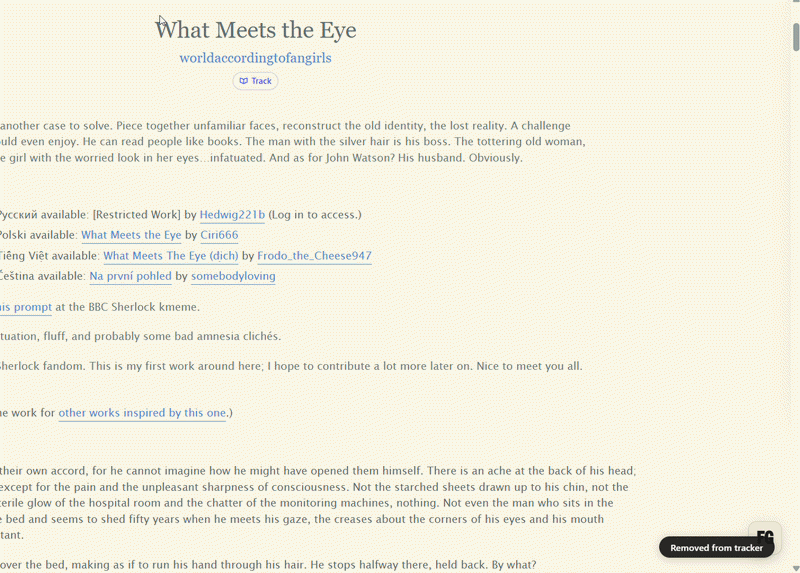
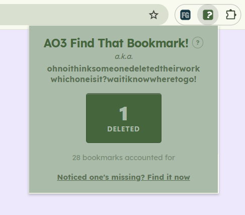
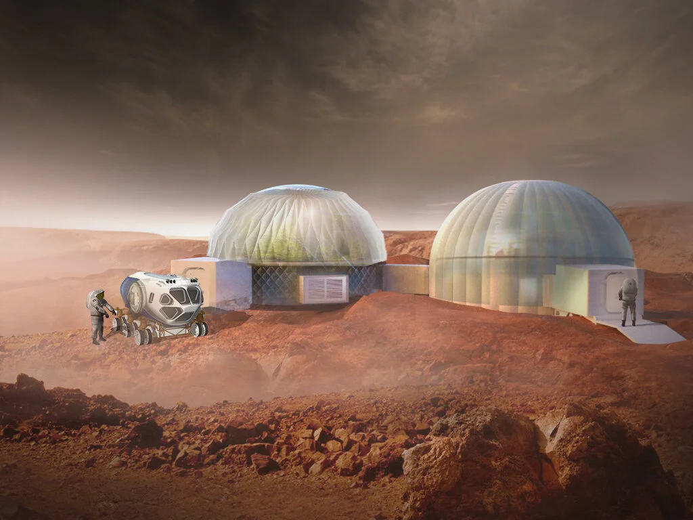

A PORTFOLIO OF EVERYDAY STUFF
Just a bunch of projects on whatever strikes my interest.
Projects

FandomGobbler.
A browser extension for tracking stories and reading progress on Archive of Our Own.

AO3 Find That Bookmark!
A browser extension that notes which AO3 bookmark has been deleted.

You Have Me
How might we encourage fun for workers who spend 80% of their time at a desk?

Marsboreal Greenhouse
A response to NASA's BIG Idea Challenge for the design and operation of a Mars greenhouse.

Oppy: Mars Rover
A children's storybook of NASA's robotic rover Opportunity.

The Body Bun
An inclusive backboard designed for bariatric and tall-stature patients.